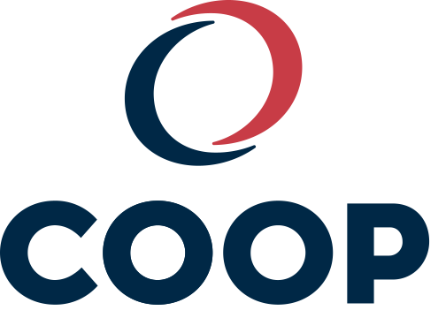
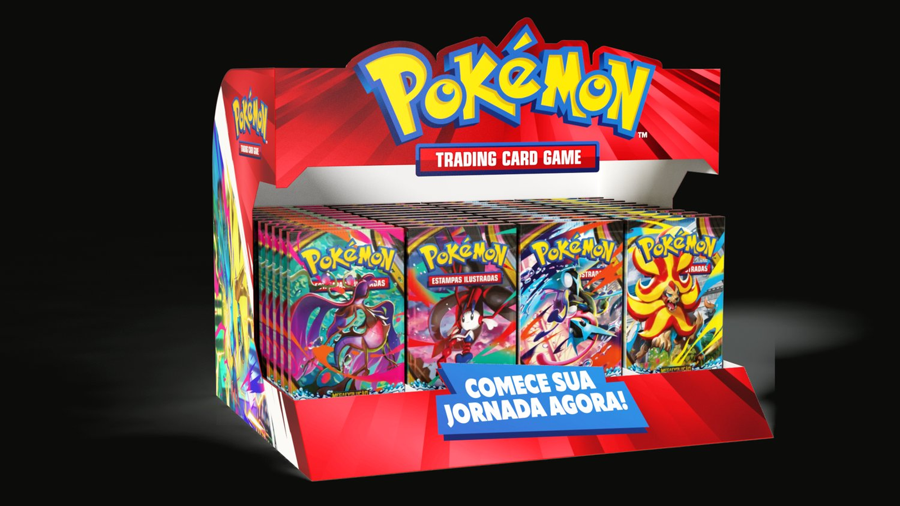
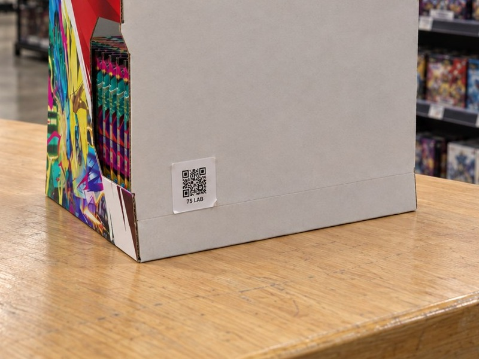

A Pokémon investe no material. Agora ela vê onde ele chegou.
02 / 17
Quem desenha a peça já teve de instalar e cobrar peça igual.
Caique Becker
Cofundador · Head de Trade
Veio do varejo: conhece o ponto de venda por quem opera a loja.
Daniel Coimbra
Cofundador · CEO
Veio da indústria: pensa a marca pelo resultado na ponta.
Dois lados do balcão. Uma pergunta só: a ideia chegou à loja?
Varejo e indústria na mesma mesa, para a marca ver na ponta o que decidiu na sala.
Marcas que confiam na 75 LAB

Fonte: trajetória dos sócios e carteira de clientes da 75 LAB, 2025 e 2026.
03 / 17
Já percorremos a loja com a Pokémon. Agora provamos a execução.
A 75 LAB já fez com a Pokémon quatro entregas, da visita em campo à tecnologia de auditoria.
Fonte: projetos da 75 LAB para a Pokémon em 2026.
01
O desafio
A Pokémon investe no material. Falta saber onde o dado se perde.
01 O desafio02 A solução03 A medição04 O plano
05 / 17
A Pokémon paga o material, mas não enxerga onde ele foi parar.
1 · Investe
Pokémon
Paga o material de ponto de venda.
paga e entrega
2 · Executa
COPAG
Instala nas lojas e não precisa compartilhar o dado.
instala
3 · Vende
Loja
Onde o material deveria estar, e o shopper decide.
hoje o dado para aqui
QR na base da peça + painel: o caminho de volta, da loja para a Pokémon
Fonte: briefing da Pokémon à 75 LAB, 16/10/2026.
02
A solução
Um QR na base de cada peça e uma TAG GPS nos displays pesados.
01 O desafio02 A solução03 A medição04 O plano
07 / 17
Peça 1 · selo QR no verso
O shopper não vê o QR. O instalador sempre vê.
O que é
Selo adesivo numerado, de 4 x 5 cm, colado na base ou no verso do display.
Como funciona
O instalador lê com a câmera, confere a montagem e registra loja e foto.
Racional
A Pokémon paga e a COPAG instala: o selo prova onde cada peça chegou.
Benefícios
Marca: prova de execução. Varejo: nada na frente. Shopper: vitrine limpa.
Fonte: proposta 75 LAB para a Pokémon; sistema Produtos 75 LAB.
08 / 17
Sistema Produtos 75 LAB · exemplo Pokémon
Em um minuto o instalador confere a montagem e registra a loja.
1Lê o QR com a câmera, sem baixar app
2Confere montagem, medidas e checklist
3Informa a loja e tira a foto da fachada
Fonte: sistema Produtos 75 LAB, páginas reais com dados de exemplo (loja e equipe fictícias).
09 / 17
A Pokémon acompanha a onda ao vivo, sem login.
Painel de exemplo · dados fictícios
Lojas positivadas e ritmo do campo, dia a dia
Positivação por rede, cidade, estado e promotor
Link só da Pokémon: sem login, com validade, e o telefone nunca aparece
Fonte: Painel de instalações da 75 LAB, tela real com dados de exemplo (redes e equipes fictícias).
10 / 17
Display pesado · TAG GPS e QR
O QR prova a instalação. A TAG GPS vigia o material depois dela.
QR nas peças leves. TAG GPS nos displays pesados.

Leitura única
QR · leitura única
Registra a instalação só quando o instalador ou o promotor escaneia. Depende da ação dele.
Sempre ligada
TAG GPS · sempre ligada
Mostra a posição do material em tempo real, sem depender de ninguém.
Juntos
Prova e vigilância
Com a TAG, a Pokémon sabe quando o material se move e age antes de perder a peça.
Fonte: proposta 75 LAB para a Pokémon.
11 / 17
Peça 2 · TAG GPS no display pesado
A TAG fica sob a base e vigia o display depois da instalação.
O que é
Etiqueta de localização GPS colada sob a base do display pesado.
Como funciona
Leva a posição do display ao painel, sem depender do instalador.
Racional
O display pesado vale mais: se sair do lugar, a Pokémon precisa saber.
Benefícios
Marca: protege o material. Varejo: display no ponto combinado. Shopper: peça sempre à vista.

Fonte: proposta 75 LAB para a Pokémon.
03
A medição
Cinco medidas e um mapa de lojas que a Pokémon passa a ter.
01 O desafio02 A solução03 A medição04 O plano
13 / 17
As medidas da auditoria
Cinco medidas mostram, loja a loja, se a execução foi competente.
Fonte: briefing da Pokémon à 75 LAB, 16/10/2026; indicadores do Painel de instalações.
14 / 17
Os registros viram o mapa de lojas que a Pokémon não tinha.
3perguntas
Loja com material vende mais?
Cruza a positivação com a venda que a Pokémon tiver por loja ou região.
Quem mais vende tem mais material?
Compara a presença de material com a venda de cada região.
Que loja importante ficou sem?
Lojas-chave da lista da Pokémon que não aparecem com registro.
Fonte: Painel de instalações da 75 LAB, tela real com dados de exemplo. O cruzamento com venda depende do dado de venda da Pokémon.
15 / 17
A auditoria entra na onda sem atrasar a COPAG.
Antes da saídaSemanas 0 a 2FechamentoDepois
Projeto Pokémon criado no sistema e etiqueta gerada
em sequência
Etiqueta enviada a quem produz e colada na expedição
em sequência
COPAG instala e cada QR lido vira registro
semanas 0 a 2
Link ao vivo, aberto no primeiro registro
em paralelo
Relatório, mapa de lojas e book de fotos
no fechamento
TAG GPS acompanha os displays pesados
sempre ligada, durante a campanha
Fonte: proposta 75 LAB para a Pokémon. As semanas se contam a partir da saída da onda, conforme a data de saída que a COPAG confirmar.
16 / 17
Simulador de investimento
Ajuste cada material e veja o investimento na hora.
Investimento total
R$ 0,00
Selos QREtiquetas GPS
MaterialTipoQuantidadeTecnologiaUnitárioSubtotal
Display expositor de chão
TipoDisplay
Quantidade
UnitárioR$ 0,50
SubtotalR$ 0,00
Display expositor de balcão
TipoDisplay
Quantidade
UnitárioR$ 0,50
SubtotalR$ 0,00
Clip strip com testeira
TipoPeça leve
Quantidade
UnitárioR$ 0,50
SubtotalR$ 0,00
Wobbler
TipoPeça leve
Quantidade
UnitárioR$ 0,50
SubtotalR$ 0,00
Stopper shelf blade
TipoPeça leve
Quantidade
UnitárioR$ 0,50
SubtotalR$ 0,00
Shelf strip
TipoPeça leve
Quantidade
UnitárioR$ 0,50
SubtotalR$ 0,00
Poster
TipoPeça leve
Quantidade
UnitárioR$ 0,50
SubtotalR$ 0,00
Total do projeto0unidadesR$ 0,00
Selo QR em qualquer peça. Etiqueta GPS só nos displays. Edite as quantidades: o total atualiza ao vivo.
Quantidades iniciais: proposta de material de PDV anterior. Valores de referência por unidade: selo QR R$ 0,50 e etiqueta GPS R$ 20,00, sem frete e instalação.
17 / 17
Ideia boa é a que acontece. E a que se prova.
Próximo passo: 30 minutos para alinhar a lista de lojas e as peças da onda, com quem vai produzi-las.
Razão social75 LAB Estratégia, Design e Produção Ltda CNPJ 55.470.982/0001-77
EndereçoCENU · Torre Norte Av. das Nações Unidas, 12.901, Brooklin São Paulo, SP · 04578-910
ContatoDaniel Coimbra · CEO daniel.coimbra@75lab.com.br 75lab.com.br · @setecincolab